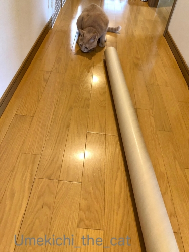
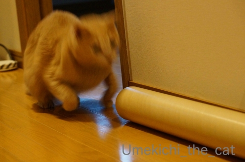
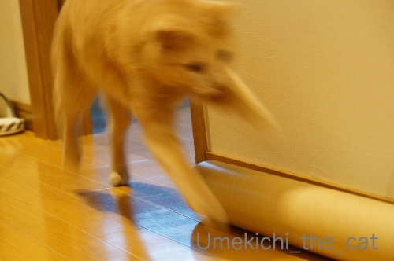
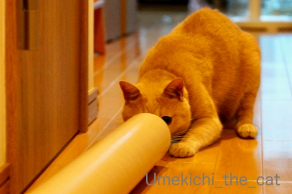
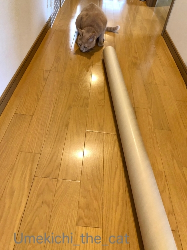
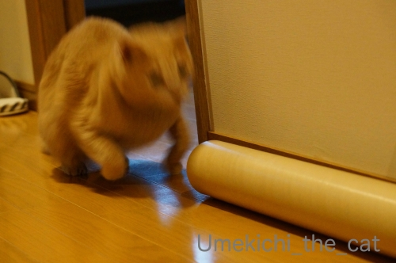
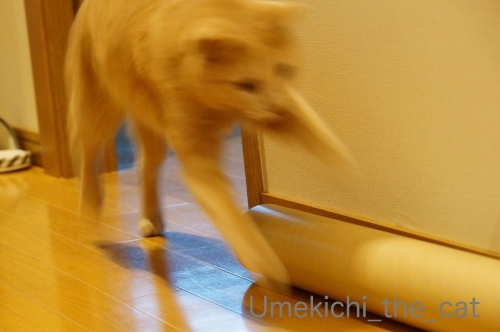
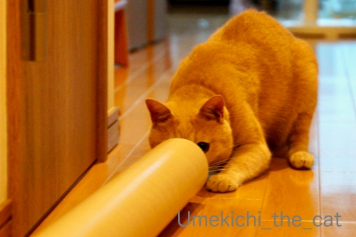

常に、前へ、進む！！ [梅吉]
洗面所のクローゼットをプチリフォームしようと壁紙を買ったら
こんななが〜いダンボールの筒に巻かれて届きました。

これは、もう、猫様のおもちゃにするしかないですよね！


筒の反対側でじゃらしを振ると


大喜び！！

おかーさんが反対側から覗くと


なんとかちょっかいを出そうと手を入れてきますwww
（18秒 音は出ません）
入れると思っているらしい( ´艸｀)
額にまあるく筒の跡がついているのが見所ですw
常に前へ進み決してあきらめない梅吉。
梅吉はラグビー日本代表を全力で応援します！！
ラグビーW杯2019日本大会、次回の日本戦は予選プール最後の試合となります。
この試合に勝つか引き分けると今大会ベスト８入り＆決勝トーナメントに進出決定です。
日本のラグビー史上初の快挙なんですよ。
その注目の試合は！
10月13日（日） 19:45〜 日本 v スコットランド 日テレ系列にて！
日テレの中継はキライなんですけどネ
日本チームの活躍はもちろん何気にオシャレなスコットランドのジャージ
（襟裏と胸元にグリーンのタータンチェック模様あり）と
スコットランドの人なのに「イタリアのちょいワルおやじ風」な
スクラムハーフ、レイドロー選手の動きにも注目です！！
どちらのチームにも最高のパフォーマンスを期待してます＾＾
 ↑ガブッと一押し↑
↑ガブッと一押し↑
5日（土）天王寺公園、てんしばにあるラグビーW杯日本大会のファンゾーンに行ってきました。
オーストラリア v ウルグアイ戦のパブリックビューイングの時間帯。
前半戦くらいまで観戦して早めに帰り、夜の日本戦は家でゆっくり見ようとの目論見ですw
ファンゾーンへの入場は無料ですが手荷物検査は大会本会場並み。
ペットボトルの飲み物はその場で一口飲んでみてくださいと言われます。
入場時に紙のリストバンドを巻いてくれ、それがあれば会場への出入りは自由。
夜の日本戦に向けて場所取りの意味もあるのでしょうか。人出が多いです！

両チームのアンセム斉唱が始まりました。
ワラビーズファン（オーストラリア）だけじゃなく日本人も盛り上がってましたよ＾＾
と、入場してからここまで15分くらい。
・・・・・・・・・・おっちゃんとおばちゃん、ギブアーップ( ；∀；)
日よけのテントは２〜３箇所あったのですがそこは満員。
太陽が照りつける中でじっと座って見るのは無理ー！！
後ろの方の邪魔になるので日傘もさせません。つばの大きな帽子も迷惑になりそう。
ちなみにこの日の大阪の最高気温は28℃。体感温度はもっとあったかと。
近くの商業施設に逃げ込んで失った水分をビールで補充して（こらッ）
とっととお家に帰りましたよ(⌒-⌒;
結論
屋内か大きな日よけのある会場じゃなければパブリックビューイングは厳しいです。
夜の試合は快適かと思いますが遅く行くと入場できない可能性が。
実際、15時前に会場を出るときには定員数の上限に達したので入場不可になってました。
（この日の日本戦は19:30〜でした）
私たちのように途中で帰る人もたくさんいるかと思いますが
その辺の人数コントロールをどうやってしているのかはわかりません。
椅子はなく基本芝生にマットを敷いて座る形になるので（てんしばの場合。他の会場は不明）
お尻も腰も痛くなります。
それに大型スクリーンが結構小さめで見難いです。。。
とネガティブな要素ばっかりあげてしまいましたが
パブリックビューイングを否定しているのではないですよ。
堪え性と根性のない二人には無理だったという話ですwww
パブリックビューイング、たくさんの人と一緒に観戦すると試合の楽しさも倍増すると思います！
もしも日本が決勝に、なんてことになれば試合は夜だし再トライしてみるかもしれませーん(≧▽≦)
それまでは快適なお家でビールを飲みながら試合観戦とすることにします＾＾
こんななが〜いダンボールの筒に巻かれて届きました。

これは、もう、猫様のおもちゃにするしかないですよね！
筒の反対側でじゃらしを振ると


大喜び！！

おかーさんが反対側から覗くと
なんとかちょっかいを出そうと手を入れてきますwww
（18秒 音は出ません）
入れると思っているらしい( ´艸｀)
額にまあるく筒の跡がついているのが見所ですw
常に前へ進み決してあきらめない梅吉。
梅吉はラグビー日本代表を全力で応援します！！
ラグビーW杯2019日本大会、次回の日本戦は予選プール最後の試合となります。
この試合に勝つか引き分けると今大会ベスト８入り＆決勝トーナメントに進出決定です。
日本のラグビー史上初の快挙なんですよ。
その注目の試合は！
10月13日（日） 19:45〜 日本 v スコットランド 日テレ系列にて！
日テレの中継はキライなんですけどネ
日本チームの活躍はもちろん何気にオシャレなスコットランドのジャージ
（襟裏と胸元にグリーンのタータンチェック模様あり）と
スコットランドの人なのに「イタリアのちょいワルおやじ風」な
スクラムハーフ、レイドロー選手の動きにも注目です！！
どちらのチームにも最高のパフォーマンスを期待してます＾＾
5日（土）天王寺公園、てんしばにあるラグビーW杯日本大会のファンゾーンに行ってきました。
オーストラリア v ウルグアイ戦のパブリックビューイングの時間帯。
前半戦くらいまで観戦して早めに帰り、夜の日本戦は家でゆっくり見ようとの目論見ですw
ファンゾーンへの入場は無料ですが手荷物検査は大会本会場並み。
ペットボトルの飲み物はその場で一口飲んでみてくださいと言われます。
入場時に紙のリストバンドを巻いてくれ、それがあれば会場への出入りは自由。
夜の日本戦に向けて場所取りの意味もあるのでしょうか。人出が多いです！
両チームのアンセム斉唱が始まりました。
ワラビーズファン（オーストラリア）だけじゃなく日本人も盛り上がってましたよ＾＾
と、入場してからここまで15分くらい。
・・・・・・・・・・おっちゃんとおばちゃん、ギブアーップ( ；∀；)
日よけのテントは２〜３箇所あったのですがそこは満員。
太陽が照りつける中でじっと座って見るのは無理ー！！
後ろの方の邪魔になるので日傘もさせません。つばの大きな帽子も迷惑になりそう。
ちなみにこの日の大阪の最高気温は28℃。体感温度はもっとあったかと。
近くの商業施設に逃げ込んで失った水分をビールで補充して（こらッ）
とっととお家に帰りましたよ(⌒-⌒;
結論
屋内か大きな日よけのある会場じゃなければパブリックビューイングは厳しいです。
夜の試合は快適かと思いますが遅く行くと入場できない可能性が。
実際、15時前に会場を出るときには定員数の上限に達したので入場不可になってました。
（この日の日本戦は19:30〜でした）
私たちのように途中で帰る人もたくさんいるかと思いますが
その辺の人数コントロールをどうやってしているのかはわかりません。
椅子はなく基本芝生にマットを敷いて座る形になるので（てんしばの場合。他の会場は不明）
お尻も腰も痛くなります。
それに大型スクリーンが結構小さめで見難いです。。。
とネガティブな要素ばっかりあげてしまいましたが
パブリックビューイングを否定しているのではないですよ。
堪え性と根性のない二人には無理だったという話ですwww
パブリックビューイング、たくさんの人と一緒に観戦すると試合の楽しさも倍増すると思います！
もしも日本が決勝に、なんてことになれば試合は夜だし再トライしてみるかもしれませーん(≧▽≦)
それまでは快適なお家でビールを飲みながら試合観戦とすることにします＾＾

カフェオレ色の梅吉

梅吉 2023年8月10日 永眠


梅吉と出会った譲渡会

犬猫の理由なき殺処分ゼロ
妄想広告
UMEKICHI 光

爆発的に早い！
時々攻撃的！
Thanks to Mr.Boss365
爆発的に早い！
時々攻撃的！
Thanks to Mr.Boss365

梅吉さん、スクラム組んでトライ～～。
by ニコニコファイト (2019-10-07 06:32)
麻紐を巻いて爪とぎが作れそうな筒ですね。
そういう遊び方も面白いかも＾＾
by ぽちの輔 (2019-10-07 06:57)
梅吉さん、そんなに長い筒でも果敢にアタックしてますねー。
押してくるところがおもしろーい。
その筒、うちにもあります。子供の工作に良いからとメルカリとかでよく売れるよ、と聞いて、とってあるのですが、そもそも、発送料が高くなるじゃん！と思ってー。今更捨てるのもなんとなくもったいなくてそのまま(^^;;
パブリックビューイングは、雰囲気楽しむってとこかなぁ。
見にくいだろうし疲れるし、私もないな(^^;;
by ChatBleu (2019-10-07 07:06)
どうしても筒の中から向こう側へ行こうとアタックを繰り返すんですね。
梅吉さん、最高に面白いです(^^)
by kou (2019-10-07 07:19)
諦めずにトライする梅吉さん、かっこいい=(^.^)=
軽やかにダッシュしたり、穴から狙ったりw
楽しんでますねぇ( ^ω^ )
ニャンコってこういうおもちゃではないもので
興奮して楽しんでくれますよねぇ♪( ´▽｀)
高かったおもちゃに見向きしてくれないのに・・・(⌒-⌒; )
by ニッキー (2019-10-07 07:24)
さすがに梅吉さんは入れませんね（笑
額に〇の後が(#^.^#)
可愛過ぎますよ♪
by きぃ (2019-10-07 08:27)
梅吉さん興味津々ですね！
ラグビー盛り上がっていますね(^^)
by ma2ma2 (2019-10-07 09:33)
諦めない精神の梅吉くん！^^
こういうのは観ててニヤニヤしちゃいますね。かわいいなあｗｗ
写真からも動きの速さ、臨場感がつたわるわ！！
by リュカ (2019-10-07 09:34)
こんにちは。
梅吉くん、新しい物には興味津々でナイスです。
チャレンジ精神あり、最後はスクラムを押している感じ（笑）
長い筒、飽きたら？新しいオモチャに改造したいです。
日本代表、台風接近で中止になり決勝進出は嬉しいけど、気分も「晴れない」感じです。
雨の中の試合も面白いと推測。また、日本に有利かも？
パブリックビューイング、どこの場所も盛り上がっていますね。
パブリックビューイング視察？お疲れ様です。雰囲気を味わえるのは良いですね。
若者・時間ある人は大いに楽しめそうな空間です。
小生も行きたいのですが、人混みが苦手で敬遠しています。
自宅でビール片手にじっくりニャンズと視聴するのがベストかな（笑）！？(=^･ｪ･^=)
by Boss365 (2019-10-07 12:45)
こんにちは。
伝え忘れましたが、カミカゼ・神風です。
スコットランドの船を転覆させる暴風雨です（笑）！？(=^･ｪ･^=)
by Boss365 (2019-10-07 12:49)
梅吉さん、ラグビーの精神を体現してくれていますね(#^^#)
私もよくこてつの向かい側から筒状のものを覗いていて、思いがけないこてつの突進でおでこを擦りむくことあります( ;∀;)
てんしば、確かに日陰がない！！
芝生を育てるには日当たりが大事なのかもしれませんが、そこで長時間過ごすのは耐えられませんね^^;
またNHKの1階でパブリックビューイングやらないか調べたのですが、次は決勝戦までないみたい。
私も自宅で盛り上がることにします。こてつは迷惑そうだけど・・。
レイドロー、ええ男やね～(#^^#)
by ゆきち (2019-10-07 12:50)
このはしゃぎっぷりｗｗ(((*≧艸≦)ﾌﾟﾌﾟｯ
これはスルー出来ない魅力がありますねｗ
入れたら入りたいですよねぇぇ
『決してあきらめない』大事なことですね♪
うちもしつこいですよーー(笑)
ラグビーはよく分からないのですが
akuby杯にはエントリーしたいです(*￣ー￣*)ﾆﾔﾘｯ
by カトリーヌ (2019-10-07 16:30)
わたしも日テレは……
台風が気になりますね〜 ^ ^
by 小松達也 (2019-10-07 16:53)
筒の穴には入れないニャ（ﾟ□ﾟ）
ラグビーW杯は、盛り上がってるね。
しかし、日本がこんなに強いとは思ってもみなかった（ﾟ□ﾟ）
ラグビーW杯でこれだけ盛り上がるのだから来年のオリンピックも大変な騒ぎになるかもね？
by 英ちゃん (2019-10-07 17:04)
筒をのぞき込む梅吉くん♪
ホントだ！ま～るい跡が額に出来てます～(≧▽≦)
洗面所のプチリフォームも気になる！
beforeAfterの写真が見たいな～。
by emi (2019-10-07 17:10)
入る気か？その筒に入る気なのか君はっ！
「（音は出ません）」という配慮ある動画なのに
思わず笑い声が出ちゃいました。家の中でよかった！
by liang (2019-10-07 17:34)
梅吉さん！中に入りたいお気持はよ～く分かります！！ ^^;
by yes_hama (2019-10-07 21:31)
梅吉さんが筒をずりずり押して来るのが可笑しいですね。お手手で向こうから届くか試してる(?)のも面白いです~。
by zombiekong (2019-10-08 02:23)
筒の反対側で歌ってみたらどうなるかな。
ゆづは、なにこれへんなおと！ってお目目まん丸になります〜
by も〜 (2019-10-08 08:41)
ちっちゃいときコップを吸って口の周りを紫色にしたことを思い出しました。
梅吉君頑張れ！(#^.^#)
by palpal (2019-10-08 08:56)
常に、前へ、進む！
梅吉さん、すてき～～～＾＾
あの手この手でどうかしたら入れると思ってるんですねー＾m＾
パグリックビューイング、楽しそうな光景！暑い日には苦しそうですね。
ペットボトルの中身はその場で飲んで見せるんですか～なるほど＾＾；
ラグビーはほとんど知らないけど、連日の報道を聞きかじってにわかファンになりつつあります＾＾
by sana (2019-10-08 14:35)
前へ前への精神は大事です。梅吉さんスカウトが来るかも！
おでこにしっかりとわっかの跡がぁぁ♪いいね～やる気がみなぎってるｗ
メリケンパークのパブリックビューイングも芝か普通のコンクリートな
地面だと思います。先日は気温も高かったのでスレ違う人々は
キャップ＆首からタオルないで立ちでしたね。
日中は老体に堪えるので無理だな～涼しいお部屋で観戦しますよ。
メリケンパークのファンゾーンは、今日までです。
今夜は神戸で19：15～南アフリカVSカナダ戦です。
13日は台風の行方次第ですね。
by marimo (2019-10-08 16:20)
もしかして梅吉さんが筒へ入るの？
とドキドキしながらの拝見となりました。
中から何か出てくるのかと思ったのかも(笑)
それにしても日本戦があるからと言ってもてんしばはすごい人だ・・・
by yamatonosuke (2019-10-09 01:38)
梅吉さん、突進してますね。
イヤホンをさして、音は出ませんに笑いました。
PC修理に出していました。
ハードデスクを軽いものに替えて、
サクサク動くようになりました。
13日、台風が過ぎてくれると良いですね。
by kiki (2019-10-11 23:37)